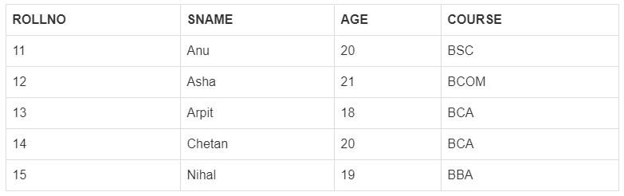

When it comes to databases, a cursor is a control structure that allows traversing over the records in a database. A cursor provides a mechanism to assign a name to a SQL select statement and then it can be used to manipulate the information within that SQL statement.
Oracle creates a memory area called Context Area, when a SQL statement is processed.A cursor is a pointer to this Context Area.A cursor contains all the information needed to process the SQL statement like information on select and all the rows.
A cursor holds the rows (one or more) returned by a SQL statement. The set of rows the cursor holds is referred to as the Active Set.You can name a cursor so that it could be referred to in a program to fetch and process the rows returned by the SQL statement, one at a time.
Implicit cursors are automatically created and used every time a Select statement is issued in PL/SQL, when there is no explicitly defined cursor. Programmers cannot control the implicit cursors and the information in it.
Whenever any DML operations occur in the database, an implicit cursor is created that holds the rows affected, in that particular operation. These cursors cannot be named and, hence they cannot be controlled or referred from another place of the code.We can refer only to the most recent cursor through the cursor attributes.
Any SQL cursor attribute will be accessed as sql%attribute_name.
| Cursor atrribute | Desciption |
|---|---|
| %FOUND | Returns TRUE if an INSERT, UPDATE, or DELETE statement affected one or more rows or a SELECT INTO statement returned one or more rows. Otherwise, it returns FALSE. |
| %NOTFOUND | The logical opposite of %FOUND. It returns TRUE if an INSERT, UPDATE, or DELETE statement affected no rows, or a SELECT INTO statement returned no rows. Otherwise, it returns FALSE. |
| %ISOPEN | Always returns FALSE for implicit cursors, because Oracle closes the SQL cursor automatically after executing its associated SQL statement. |
| %ROWCOUNT | Returns the number of rows affected by an INSERT, UPDATE, or DELETE statement, or returned by a SELECT INTO statement. |
Example
TABLE USED:CUSTOMERS
DECLARE
total_rows number(2);
BEGIN
UPDATE customers
SET salary = salary + 500;
IF sql%notfound THEN
dbms_output.put_line('no customers selected');
ELSIF sql%found THEN
total_rows := sql%rowcount;
dbms_output.put_line( total_rows || ' customers selected ');
END IF;
END;
/
If you check the records in customers table, you will find that the rows have been updated −
Explicit cursors are defined explicitly by the developer. In PL/SQL an explicit cursor is actually a named query defined using the key word cursor. It is created on a SELECT Statement which returns more than one row.
Declaring the cursor defines the cursor with a name and the associated SELECT statement.
Syntax
CURSOR cursor_name IS select_statement;
Example
CURSOR c_customers IS SELECT id, name, address FROM customers;
Opening the cursor allocates the memory for the cursor and makes it ready for fetching the rows returned by the SQL statement into it.
Syntax
OPEN cursor_name;
Example
OPEN c_customers;
Fetching the cursor involves accessing one row at a time.
Syntax
FETCH cursor_name INTO variable_names;
Example
FETCH c_customers INTO c_id, c_name, c_addr;
Closing the cursor means releasing the allocated memory.
Syntax
CLOSE cursor_name;
Example
CLOSE c_customers;
TABLE USED:STUDENT
Example
DECLARE
CURSOR student_cursor IS SELECT sname FROM Student ;
snm Student.sname %type;
BEGIN
OPEN student_cursor;
IF student_cursor%ISOPEN FALSE then
dbms_output.put_line('Cannot open cursor');
ELSE
LOOP
FETCH student_cursor INTO snm;
IF student_cursor%NOTFOUND then
Exit;
END IF;
dbms_ output.put_line('' ||snm);
END LOOP;
dbms_output.put_line('Total Records: ' ||student_cursor%rowcount);
CLOSE student_cursor;
END;
A Cursor FOR LOOP is a loop meant for the cursor which automatically checks for the row count and exits the loop when all the data stored in the cursor is iterated. A cursor FOR loop automatically does the following:
Syntax
FOR variable_name IN cursor_name LOOP
-- Executable statements
END LOOP;
Example
DECLARE
CURSOR student_cursor IS SELECT sname FROM Student;
BEGIN
FOR sname IN student_cursor LOOP
dbms_output.put_line('' || snm);
END LOOP;
END;
A parameterized cursor is a cursor with arguments and it allows us to create dynamic SQL queries with conditions containing the variables.
Syntax
CURSOR cursor_name (variable_name Datatype) IS SELECT statement...;
After declaring a parameterized cursor, when we open it we have to provide the value to be used in the parameterized cursor, like this:
OPEN cursor_name(value/variable/expression);
Example
set serveroutput on;
DECLARE
CURSOR showRec(sno student.rollno%type) IS SELECT sname, course FROM student WHERE rollno=sno;
a student.sname%type;
b student.course%type;
c student.rollno%type;
BEGIN
d := &rollno;
OPEN showRec(d);
IF showRec%Isopen = FALSE then
dbms_output.put_line('Cannot open Cursor');
ELSE
LOOP
FETCH showRec into a,b;
EXIT WHEN showRec%NOTFOUND;
dbms_output.put_line(a|| '' ||b);
END LOOP;
End IF;
CLOSE showRec;
END;